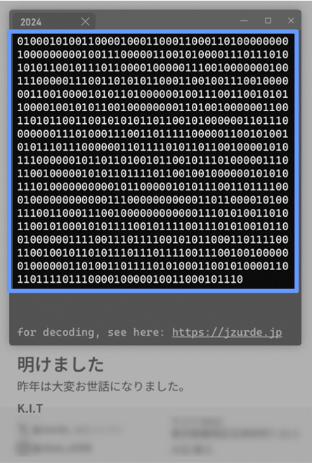
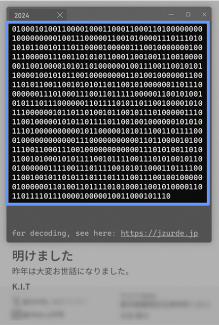
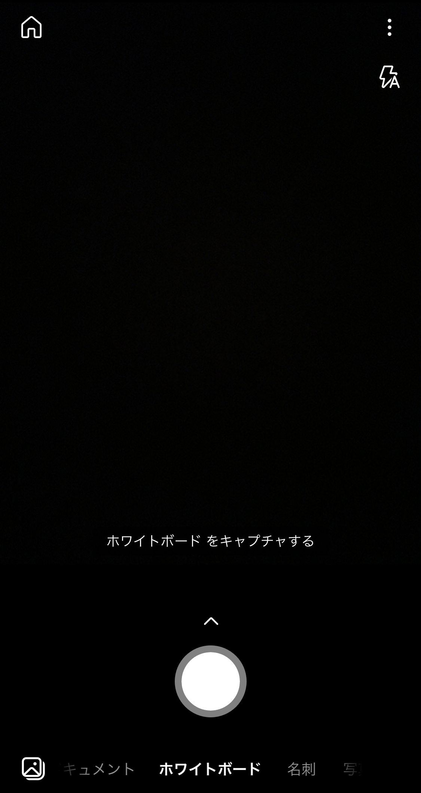

とは、もちろん思っていますが、もっと伝えたいことがあります。
それは、この部分です。
誰にも盗み見されないように、LZ78符号で符号化しておきました。
次のページ以降で復号方法を紹介します。
このサイトは、スマートフォンからのみ体験できます。
より具体的には、画面の横幅が550px以下である必要があります。
昨年は大変お世話になりました。
今年もよろしくお願いします。
とは、もちろん思っていますが、もっと伝えたいことがあります。
それは、この部分です。
誰にも盗み見されないように、LZ78符号で符号化しておきました。
次のページ以降で復号方法を紹介します。
符号語はとっても長いので、手で打ち込むと大変です。
「Microsoft Lense」をインストールして読み込ませます。
インストールしたら起動してください。

このホップアップを閉じて、「符号語」エリアに張り付けて復号してみましょう。